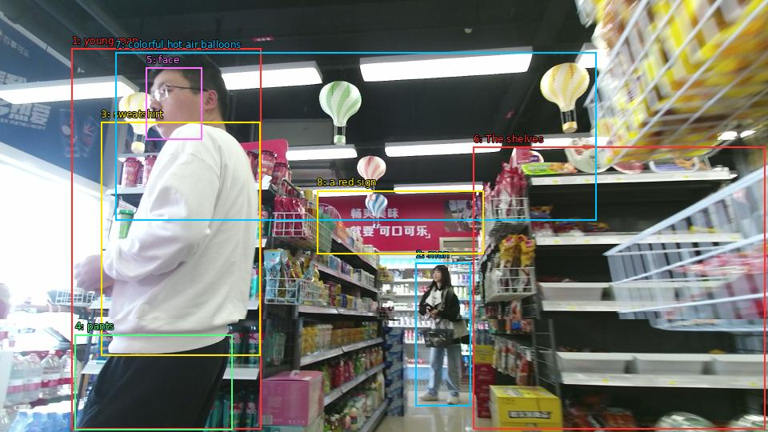

The image shows a young man standing in a supermarket aisle. He is wearing a white sweatshirt and black pants and is looking at the shelves with a serious expression on his face. The shelves are stocked with various items such as snacks, drinks, and other grocery items. There are also colorful hot air balloons hanging from the ceiling. In the background, there is a red sign with Chinese characters on it. The store appears to be well-lit with bright lights.

Original · Caption raw · Grounding raw · Koordinate
Številke so lokalni ID regije. Dolge slikovne oznake so skrajšane; spodaj so celotne fraze. Napovedane regije se lahko prekrivajo ali opisujejo skupine.
| ID | Celotna fraza | bbox xyxy |
|---|---|---|
| 1 | young man | [89.75999450683594, 60.750003814697266, 326.8800048828125, 536.4900512695312] |
| 2 | man | [519.8399658203125, 328.0500183105469, 588.0, 507.8700256347656] |
| 3 | sweatshirt | [126.23999786376953, 152.5500030517578, 325.91998291015625, 444.1500244140625] |
| 4 | pants | [93.5999984741211, 418.2300109863281, 290.3999938964844, 537.5700073242188] |
| 5 | face | [182.87998962402344, 84.51000213623047, 252.95999145507812, 174.15000915527344] |
| 6 | The shelves | [591.8399658203125, 183.87001037597656, 956.6399536132812, 536.4900512695312] |
| 7 | colorful hot air balloons | [144.47999572753906, 65.61000061035156, 745.4400024414062, 275.6700134277344] |
| 8 | a red sign | [396.0, 238.41000366210938, 604.3200073242188, 317.25] |